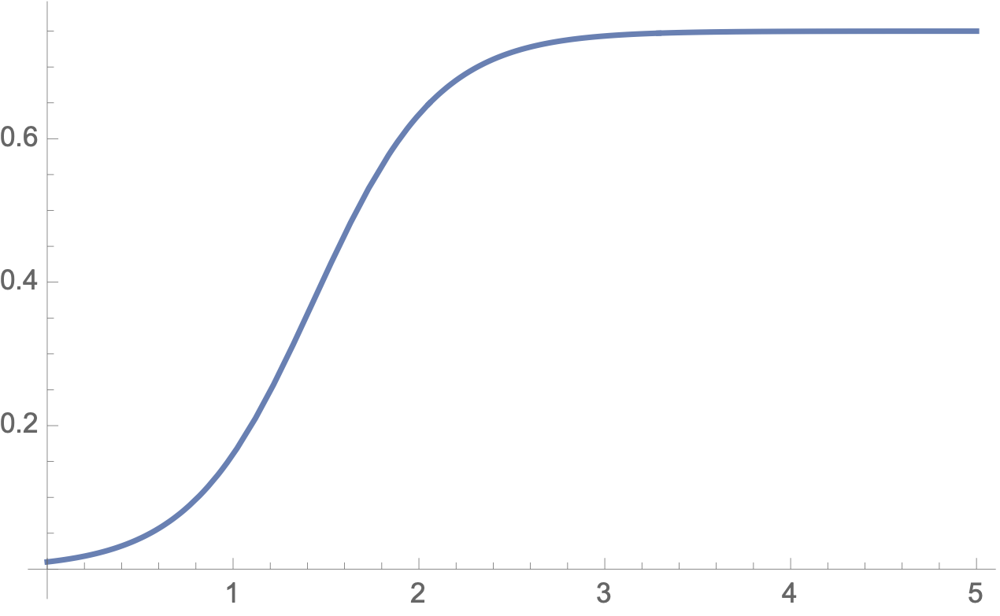

Chapter 16 Epidemics on Networks
Exercises Practice Problems
1. Excess Degree Distribution.
Suppose that we have a large network for which there is no correlation between vertex degrees. That is, an edge from vertex \(v\) leads to a vertex chosen uniformly at random. Let \(p_k\) denote the fraction of vertices of degree \(k\text{.}\) When you pick a vertex \(v\) at random, we have \(\Pr[\deg(v)=k] = p_k\text{.}\) This means that the expected degree of the network is
Consider the following process: Pick a random vertex \(v\) and then move to a random neighbor \(w\) of vertex \(v\text{.}\) Let
In other words, \(w\) has \(k\) additional edges, besides the one you just traveled. In this case, we say that \(w\) has excess degree \(k\text{.}\)
-
Explain why the excess degree distribution satisfies
\begin{equation*} q_k = \frac{(k+1) p_{k+1}}{\langle k \rangle}. \end{equation*} -
Confirm that the expected degree of vertex \(w\) is
\begin{equation*} \frac{\langle k^2 \rangle}{\langle k \rangle}. \end{equation*} -
Recall that
\begin{equation*} \mbox{Var}[X] = E[X^2] - E[X]^2 > 0 \end{equation*}when \(X\) is not constant. Use this to explain why that the expected degree of \(w\) is larger than the expected degree of \(v\text{.}\)
Colloquially, people refer to this result as: "your friends are more popular than you." Why?
2. Susceptible-Infected Model: The Homogeneous Case.
We start by considering a spread of disease model that replaces the network with a simplifying assumption: everyone is equally likely to interact with everyone else. Consider a large population where a disease is active. People are either susceptible to the disease or are infected. Once you are infected, you remain infected. Let
-
Interpret the following differential equation for the Susceptible/Infected Model (SI Model) with transmission rate \(\beta \langle k \rangle\text{:}\)
\begin{equation*} \frac{dI}{dt} = \beta \langle k \rangle I S = \beta \langle k \rangle I (1-I). \end{equation*} -
This differential equation is called the logistic equation. Its solution is the logistic function
\begin{equation*} I(t) = \frac{I_0}{I_0 + (1-I_0)e^{-\beta \langle k \rangle t}} \end{equation*}where \(I_0 = I(0)\) is the fraction of infected people at time \(t=0\text{.}\) We can write this as
\begin{equation*} I(t) = \frac{1}{1+a e^{-c t}} \end{equation*}where \(a = 1/I_0 - 1\) and \(c= \beta \langle k \rangle\text{.}\) Calculate \(\frac{dI}{dt}\) to confirm that \(I(t)\) satisfies the logistic equation
\begin{equation*} \frac{dI}{dt} = c I (1-I). \end{equation*} -
Here is a plot of the logistic function \(I(t)\text{.}\)
Look at the formula from question 2(b) and explain why\(I(t) \sim e^{\beta \langle k \rangle t}\) when \(t >0\) is very small.
\(I(t) \approx 1\) when \(t\) is very large.
3. Susceptible-Infected Model on a Network.
Now we consider a networked version of the SI model. Our "no correlation" assumption means that the fraction of infected neighbors of susceptible vertex \(v\) does not depend on \(\deg(v)\text{.}\) We let
-
Explain why
\begin{equation*} \frac{dI_k}{dt} = \beta \, k \, \Theta \, (1- I_k). \end{equation*} -
We are interested in the early time behavior of \(I_k\text{,}\) since we would like to intervene (via quarantine or travel restrictions, etc) before the disease gets out of hand. If there aren't many infected vertices, then we may approximate \(1 - I_k \approx 1\) so that
\begin{equation*} \frac{dI_k}{dt} \approx \beta \, k \, \Theta. \end{equation*}Early on, the set of infected nodes is tree-like. In particular, you can assume that an infected vertex \(v\) has a link that points back to the (infected) vertex that transmitted the disease.
Use the excess degree equation from problem 1(a) to explain why the fraction of links available for future transmission to a susceptible vertex is
\begin{equation*} \Theta \approx \frac{\sum_{k} (k-1) p_k I_k}{\langle k \rangle}. \end{equation*} -
Taking the derivative of the previous quantity, and using the approximation
\begin{equation*} \frac{dI_k}{dt} \approx \beta \, k \, \Theta, \end{equation*}we get a differential equation of the form
\begin{equation*} \frac{d \Theta}{d t} = A \Theta \end{equation*}which has solution
\begin{equation*} \Theta(t) = C e^{At}. \end{equation*}Show that
\begin{equation*} A= \beta \frac{\langle k^2 \rangle - \langle k \rangle}{\langle k \rangle}. \end{equation*}(The constant \(C\) is determined by the initial conditions.)
-
In the previous part, you showed that the fraction of links from available for future transmission from infected vertices to susceptible vertices is
\begin{equation*} \Theta(t) = C e^{t/{\tau}} \mbox{ where } \tau = \frac{1}{A} = \frac{\langle k \rangle}{\beta ( \langle k^2 \rangle - \langle k \rangle)}. \end{equation*}Early on in the epidemic, we have
\begin{equation*} \frac{dI_k}{dt} \approx \beta \, k \, \Theta = \beta \, k \, C e^{t/{\tau}}. \end{equation*}Explain why higher degree vertices are more likely to be infected.
-
Finally, we explore the effect of the network structure on the spread of disease in the network. We focus on
\begin{equation*} \tau = \frac{\langle k \rangle}{\beta ( \langle k^2 \rangle - \langle k \rangle)}. \end{equation*}We call \(\tau\) the characteristic time scale for the spread of the disease since it controls the rate of infection. A bigger \(\tau\) means that the infection takes longer to spread. Intuitively, we have
\begin{equation*} \tau = \mbox{characteristic time scale} = \frac{1}{\mbox{infection rate}}. \end{equation*}-
For the Erdos-Renyi graph, we have
\begin{equation*} \langle k^2 \rangle \approx \langle k \rangle^2 + \langle k \rangle. \end{equation*}What is \(\tau\) in this case? How does \(1/ \tau\) compare to the infection rate in the differential equation in problem 2(a) for the homogeneous case (where we decided to ignore the network)?
-
Consider a graph whose degree distribution obeys a power law
\begin{equation*} \Pr[\deg(v)=q] \sim q^{-\alpha}. \end{equation*}For a natural power law, we have \(2 < \alpha < 3\text{.}\) Recall that for a natural power law, \(\langle k \rangle\) is finite but \(\langle k^2 \rangle\) is infinite. (This is what led to the appearance of hubs.) What does this imply about the infection rate on such a network? What role must the hubs play, especially in light of part (d) above, and the fact that "your friends are more popular than you are"?
-